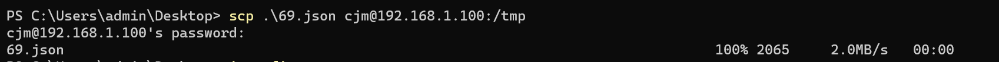
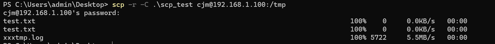
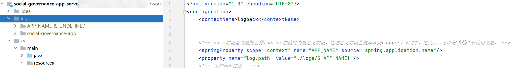
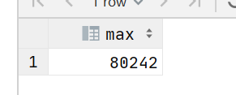
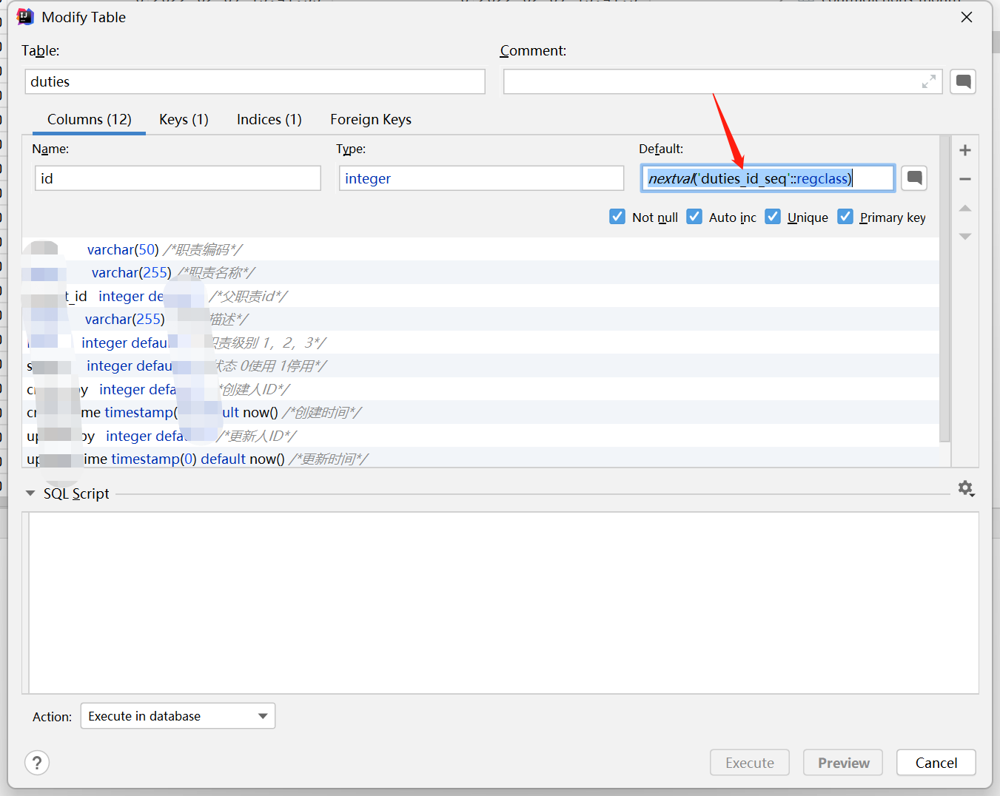

Foam 使用指南
Foam 使用指南
开发使用 vscode 可以省事很多，毕竟用的人真的很多，而且现在 vscode 中的 foam 使用也很方便，公司对于软件有要求，遂从 [[Obsidian]] 迁移到了 [[vscode foam使用指南]]中。
Install
从官方插件库中进行安装，为了获得更好的使用体验，还需要添加一系列的插件。
- Markdown image
- Paste image
- Markdown Checkbox https://marketplace.visualstudio.com/items?itemName=PKief.markdown-checkbox
- TODO Highlight https://marketplace.visualstudio.com/items?itemName=wayou.vscode-todo-highlight
使用中的问题
@ref: https://zhuanlan.zhihu.com/p/178536985 @ref: https://github.com/Jackiexiao/10-minutes-to-foam 官方库链接 https://foambubble.github.io/foam/
linux命令 scp
tags: #linux #scp #每日一学
linux复制文件和文件夹可以使用 scp命令来进行操作。
其实也可以使用[[lszrz]]来进行传输文件，但是需要进行安装。考虑自带的[[openssh]]来进行传输文件。
用法
scp 参数 源文件 目标文件
➜ /tmp scp
usage: scp [-346BCpqrTv] [-c cipher] [-F ssh_config] [-i identity_file]
[-J destination] [-l limit] [-o ssh_option] [-P port]
[-S program] source ... target
常用参数：
-r 递归操作 （支持目录）
-C 压缩
本地到远程
scp local_file remote_username@remote_ip:remote_folder
或者
scp local_file remote_username@remote_ip:remote_file
或者
scp local_file remote_ip:remote_folder
或者
scp local_file remote_ip:remote_file
实例：

远程到本地
scp remote_username@remote_ip:remote_folder local_file
或者
scp remote_username@remote_ip:remote_file local_file
或者
scp remote_ip:remote_folder local_file
或者
scp remote_ip:remote_file local_file

➜ scp_test tree
.
├── dir
│?? └── test.txt
├── test.txt
└── xxxtmp.log
1 directory, 3 files
Mybatis mysql find_in_set用法
tags: #mybatis
<if test="requestVO.responsible != null">
and find_in_set(#{requestVO.responsible}, t.responsible)
</if>
MySQL 修改已经存在表字段长度
tags: #mysql
[[mysql alter table]] 是修改表结构的语句。
ALTER TABLE `workorder_record`
CHANGE `deal_man` `deal_man` VARCHAR(255) CHARSET utf8mb4 COLLATE utf8mb4_general_ci DEFAULT '' NOT NULL COMMENT '处理人';
具体语法为：
| CHANGE [COLUMN] _old_col_name_ _new_col_name_ _column_definition_ [FIRST | AFTER _col_name_]
link: https://dev.mysql.com/doc/refman/8.0/en/alter-table.html
Spring logback-spring.xml logback.xml区别
tags: #spring #日志 #todo
logback.xml，logback-spring.xml的区别 如果在xml中要使用 spring的配置，例如这样 获取对应的appName
<springProperty scope="context" name="springAppName" source="spring.application.name"/>
则必须使用文件名为：logback-spring.xml 不然就会出现 获取不到的情况 例如：

这个就会出现APP_NAME_IS_UNDEFINED的情况 如果改成 logback-spring.xml
- [[2022-04-28]] 学习下[[spring加载各个配置文件的顺序]] 例如yml,properties, xml
window下的软件安装管理工具scoop
tags: #windows/scoop #工具
安装
设置环境
#home路径
$env:SCOOP='D:\Applications\Scoop'
[Environment]::SetEnvironmentVariable('SCOOP', $env:SCOOP, 'User')
$env:SCOOP_GLOBAL='D:\Applications\GlobalScoopApps'
[Environment]::SetEnvironmentVariable('SCOOP_GLOBAL', $env:SCOOP_GLOBAL, 'Machine')
安装
在 PowerShell 中输入下面内容，保证允许本地脚本的执行：
set-executionpolicy remotesigned -scope currentuser
然后执行下面的命令安装 Scoop：
Invoke-Expression (New-Object System.Net.WebClient).DownloadString('https://get.scoop.sh')
脚本执行完就好了
.\install.ps1 -ScoopDir 'D:\Applications\Scoop' -ScoopGlobalDir 'D:\Applications\GlobalScoopApps' -NoProxy
常用命令
#重置应用以解决冲突,会重置环境变量,快捷方式等..
scoop reset *
# 更新 scoop 及软件包列表
scoop update
## 安装软件 ##
# 非全局安装（并禁止安装包缓存）
scoop install -k <app>
# 全局安装（并禁止安装包缓存）
sudo scoop install -gk <app>
## 卸载软件 ##
# 卸载非全局软件（并删除配置文件）
scoop uninstall -p <app>
# 卸载全局软件（并删除配置文件）
sudo scoop uninstall -gp <app>
## 更新软件 ##
# 更新所有非全局软件（并禁止安装包缓存）
scoop update -k *
# 更新所有软件（并禁止安装包缓存）
sudo scoop update -gk *
## 垃圾清理 ##
# 删除所有旧版本非全局软件（并删除软件包缓存）
scoop cleanup -k *
# 删除所有旧版本软件（并删除软件包缓存）
sudo scoop cleanup -gk *
# 清除软件包缓存
scoop cache rm *
代理设置
Scoop 默认使用的是系统代理，如果你想手动指定代理，可以输入下面的命令。需要注意的是只支持 http 协议。
踩坑日记 mybatis plus 插入数据失败
tags: #mybatisPlus #踩坑
2022-07-27 10:24:37.219 ERROR 12696 --- [traceID:^-^] [nio-7090-exec-3] c.c.u.w.e.GlobalExceptionHandler 146 : org.springframework.dao.DataIntegrityViolationException:
### Error updating database. Cause: java.sql.SQLIntegrityConstraintViolationException: Column 'id' cannot be null
### The error may exist in file [D:\Developer\code\cetsc\Base_A\base-service\target\classes\mapper\DictTypeMapper.xml]
### The error may involve com.cestc.springboot.system.mapper.DictTypeMapper.insert-Inline
### The error occurred while setting parameters
### SQL: insert into dict_type (id, dict_name, dict_type, dict_status, create_by, create_time, update_by, update_time, remark, is_delete) values (?, ?, ?, ?, ?, ?, ?, ?, ?, ?)
### Cause: java.sql.SQLIntegrityConstraintViolationException: Column 'id' cannot be null
; Column 'id' cannot be null; nested exception is java.sql.SQLIntegrityConstraintViolationException: Column 'id' cannot be null
at org.springframework.jdbc.support.SQLExceptionSubclassTranslator.doTranslate(SQLExceptionSubclassTranslator.java:87)
at org.springframework.jdbc.support.AbstractFallbackSQLExceptionTranslator.translate(AbstractFallbackSQLExceptionTranslator.java:70)
at org.springframework.jdbc.support.AbstractFallbackSQLExceptionTranslator.translate(AbstractFallbackSQLExceptionTranslator.java:79)
at org.mybatis.spring.MyBatisExceptionTranslator.translateExceptionIfPossible(MyBatisExceptionTranslator.java:91)
at org.mybatis.spring.SqlSessionTemplate$SqlSessionInterceptor.invoke(SqlSessionTemplate.java:441)
at com.sun.proxy.$Proxy124.insert(Unknown Source)
at org.mybatis.spring.SqlSessionTemplate.insert(SqlSessionTemplate.java:272)
at com.baomidou.mybatisplus.core.override.MybatisMapperMethod.execute(MybatisMapperMethod.java:59)
at com.baomidou.mybatisplus.core.override.MybatisMapperProxy$PlainMethodInvoker.invoke(MybatisMapperProxy.java:148)
at com.baomidou.mybatisplus.core.override.MybatisMapperProxy.invoke(MybatisMapperProxy.java:89)
at com.sun.proxy.$Proxy125.insert(Unknown Source)
at com.baomidou.mybatisplus.extension.service.IService.save(IService.java:63)
at com.cestc.springboot.system.service.impl.DictTypeServiceImpl.insertDictType(DictTypeServiceImpl.java:299)
at com.cestc.springboot.system.service.impl.DictTypeServiceImpl$$FastClassBySpringCGLIB$$a5d6f9db.invoke(<generated>)
at org.springframework.cglib.proxy.MethodProxy.invoke(MethodProxy.java:218)
at org.springframework.aop.framework.CglibAopProxy$DynamicAdvisedInterceptor.intercept(CglibAopProxy.java:689)
at com.cestc.springboot.system.service.impl.DictTypeServiceImpl$$EnhancerBySpringCGLIB$$14d410c5.insertDictType(<generated>)
at com.cestc.springboot.system.controller.SysDictTypeController.add(SysDictTypeController.java:59)
at sun.reflect.NativeMethodAccessorImpl.invoke0(Native Method)
at sun.reflect.NativeMethodAccessorImpl.invoke(NativeMethodAccessorImpl.java:62)
at sun.reflect.DelegatingMethodAccessorImpl.invoke(DelegatingMethodAccessorImpl.java:43)
at java.lang.reflect.Method.invoke(Method.java:498)
at org.springframework.web.method.support.InvocableHandlerMethod.doInvoke(InvocableHandlerMethod.java:205)
at org.springframework.web.method.support.InvocableHandlerMethod.invokeForRequest(InvocableHandlerMethod.java:150)
at org.springframework.web.servlet.mvc.method.annotation.ServletInvocableHandlerMethod.invokeAndHandle(ServletInvocableHandlerMethod.java:117)
at org.springframework.web.servlet.mvc.method.annotation.RequestMappingHandlerAdapter.invokeHandlerMethod(RequestMappingHandlerAdapter.java:895)
at org.springframework.web.servlet.mvc.method.annotation.RequestMappingHandlerAdapter.handleInternal(RequestMappingHandlerAdapter.java:808)
at org.springframework.web.servlet.mvc.method.AbstractHandlerMethodAdapter.handle(AbstractHandlerMethodAdapter.java:87)
at org.springframework.web.servlet.DispatcherServlet.doDispatch(DispatcherServlet.java:1067)
at org.springframework.web.servlet.DispatcherServlet.doService(DispatcherServlet.java:963)
at org.springframework.web.servlet.FrameworkServlet.processRequest(FrameworkServlet.java:1006)
at org.springframework.web.servlet.FrameworkServlet.doPost(FrameworkServlet.java:909)
at javax.servlet.http.HttpServlet.service(HttpServlet.java:665)
at org.springframework.web.servlet.FrameworkServlet.service(FrameworkServlet.java:883)
at javax.servlet.http.HttpServlet.service(HttpServlet.java:750)
at org.apache.catalina.core.ApplicationFilterChain.internalDoFilter(ApplicationFilterChain.java:227)
at org.apache.catalina.core.ApplicationFilterChain.doFilter(ApplicationFilterChain.java:162)
at org.apache.tomcat.websocket.server.WsFilter.doFilter(WsFilter.java:53)
at org.apache.catalina.core.ApplicationFilterChain.internalDoFilter(ApplicationFilterChain.java:189)
at org.apache.catalina.core.ApplicationFilterChain.doFilter(ApplicationFilterChain.java:162)
at org.springframework.web.filter.RequestContextFilter.doFilterInternal(RequestContextFilter.java:100)
at org.springframework.web.filter.OncePerRequestFilter.doFilter(OncePerRequestFilter.java:117)
at org.apache.catalina.core.ApplicationFilterChain.internalDoFilter(ApplicationFilterChain.java:189)
at org.apache.catalina.core.ApplicationFilterChain.doFilter(ApplicationFilterChain.java:162)
at org.springframework.web.filter.FormContentFilter.doFilterInternal(FormContentFilter.java:93)
at org.springframework.web.filter.OncePerRequestFilter.doFilter(OncePerRequestFilter.java:117)
at org.apache.catalina.core.ApplicationFilterChain.internalDoFilter(ApplicationFilterChain.java:189)
at org.apache.catalina.core.ApplicationFilterChain.doFilter(ApplicationFilterChain.java:162)
at org.springframework.web.filter.CharacterEncodingFilter.doFilterInternal(CharacterEncodingFilter.java:201)
at org.springframework.web.filter.OncePerRequestFilter.doFilter(OncePerRequestFilter.java:117)
at org.apache.catalina.core.ApplicationFilterChain.internalDoFilter(ApplicationFilterChain.java:189)
at org.apache.catalina.core.ApplicationFilterChain.doFilter(ApplicationFilterChain.java:162)
at org.apache.catalina.core.StandardWrapperValve.invoke(StandardWrapperValve.java:197)
at org.apache.catalina.core.StandardContextValve.invoke(StandardContextValve.java:97)
at org.apache.catalina.authenticator.AuthenticatorBase.invoke(AuthenticatorBase.java:541)
at org.apache.catalina.core.StandardHostValve.invoke(StandardHostValve.java:135)
at org.apache.catalina.valves.ErrorReportValve.invoke(ErrorReportValve.java:92)
at org.apache.catalina.core.StandardEngineValve.invoke(StandardEngineValve.java:78)
at org.apache.catalina.connector.CoyoteAdapter.service(CoyoteAdapter.java:360)
at org.apache.coyote.http11.Http11Processor.service(Http11Processor.java:399)
at org.apache.coyote.AbstractProcessorLight.process(AbstractProcessorLight.java:65)
at org.apache.coyote.AbstractProtocol$ConnectionHandler.process(AbstractProtocol.java:889)
at org.apache.tomcat.util.net.NioEndpoint$SocketProcessor.doRun(NioEndpoint.java:1743)
at org.apache.tomcat.util.net.SocketProcessorBase.run(SocketProcessorBase.java:49)
at org.apache.tomcat.util.threads.ThreadPoolExecutor.runWorker(ThreadPoolExecutor.java:1191)
at org.apache.tomcat.util.threads.ThreadPoolExecutor$Worker.run(ThreadPoolExecutor.java:659)
at org.apache.tomcat.util.threads.TaskThread$WrappingRunnable.run(TaskThread.java:61)
at java.lang.Thread.run(Thread.java:750)
Caused by: java.sql.SQLIntegrityConstraintViolationException: Column 'id' cannot be null
at com.mysql.cj.jdbc.exceptions.SQLError.createSQLException(SQLError.java:117)
at com.mysql.cj.jdbc.exceptions.SQLExceptionsMapping.translateException(SQLExceptionsMapping.java:122)
at com.mysql.cj.jdbc.ClientPreparedStatement.executeInternal(ClientPreparedStatement.java:953)
at com.mysql.cj.jdbc.ClientPreparedStatement.execute(ClientPreparedStatement.java:370)
at com.zaxxer.hikari.pool.ProxyPreparedStatement.execute(ProxyPreparedStatement.java:44)
at com.zaxxer.hikari.pool.HikariProxyPreparedStatement.execute(HikariProxyPreparedStatement.java)
at sun.reflect.NativeMethodAccessorImpl.invoke0(Native Method)
at sun.reflect.NativeMethodAccessorImpl.invoke(NativeMethodAccessorImpl.java:62)
at sun.reflect.DelegatingMethodAccessorImpl.invoke(DelegatingMethodAccessorImpl.java:43)
at java.lang.reflect.Method.invoke(Method.java:498)
at org.apache.ibatis.logging.jdbc.PreparedStatementLogger.invoke(PreparedStatementLogger.java:59)
at com.sun.proxy.$Proxy221.execute(Unknown Source)
at org.apache.ibatis.executor.statement.PreparedStatementHandler.update(PreparedStatementHandler.java:47)
at org.apache.ibatis.executor.statement.RoutingStatementHandler.update(RoutingStatementHandler.java:74)
at org.apache.ibatis.executor.SimpleExecutor.doUpdate(SimpleExecutor.java:50)
at org.apache.ibatis.executor.BaseExecutor.update(BaseExecutor.java:117)
at org.apache.ibatis.executor.CachingExecutor.update(CachingExecutor.java:76)
at sun.reflect.NativeMethodAccessorImpl.invoke0(Native Method)
at sun.reflect.NativeMethodAccessorImpl.invoke(NativeMethodAccessorImpl.java:62)
at sun.reflect.DelegatingMethodAccessorImpl.invoke(DelegatingMethodAccessorImpl.java:43)
at java.lang.reflect.Method.invoke(Method.java:498)
at org.apache.ibatis.plugin.Plugin.invoke(Plugin.java:64)
at com.sun.proxy.$Proxy219.update(Unknown Source)
at org.apache.ibatis.session.defaults.DefaultSqlSession.update(DefaultSqlSession.java:194)
at org.apache.ibatis.session.defaults.DefaultSqlSession.insert(DefaultSqlSession.java:181)
at sun.reflect.NativeMethodAccessorImpl.invoke0(Native Method)
at sun.reflect.NativeMethodAccessorImpl.invoke(NativeMethodAccessorImpl.java:62)
at sun.reflect.DelegatingMethodAccessorImpl.invoke(DelegatingMethodAccessorImpl.java:43)
at java.lang.reflect.Method.invoke(Method.java:498)
at org.mybatis.spring.SqlSessionTemplate$SqlSessionInterceptor.invoke(SqlSessionTemplate.java:427)
... 63 more
踩坑日记
踩坑日记-处理pg的自增长主键数据异常问题
tags: #postgresql #踩坑
备份迁移完 postgresql的表之后，插入数据的时候发现了报错。
DETAIL: Key (id)=(2) already exists.
这个实际上是由于自增长的id重复出现导致的，我们要刷新下自增长的id的值。
SELECT MAX(id) FROM duties;

可以看到最大的id已经是80242了，但是自增长的id还是2，这个就导致了这个问题
可以通过设置id自增长来解决这个问题。
select setval('tablename_id_seq', max(id)) from tablename;
实际例子：
SELECT setval('duties_id_seq', (SELECT MAX(id) FROM duties));
tablename_id_seq取得并不是id，取得是nextval的参数

[[postgist创建表]]
踩坑日记-无法启动spring项目
tags: #java/springboot #踩坑
. ____ _ __ _ _
/\\ / ___'_ __ _ _(_)_ __ __ _ \ \ \ \
( ( )\___ | '_ | '_| | '_ \/ _` | \ \ \ \
\\/ ___)| |_)| | | | | || (_| | ) ) ) )
' |____| .__|_| |_|_| |_\__, | / / / /
=========|_|==============|___/=/_/_/_/
:: Spring Boot :: (v2.5.9)
2022-03-07 18:00:32.261 INFO 23176 --- [ main] c.a.n.c.c.impl.LocalConfigInfoProcessor : LOCAL_SNAPSHOT_PATH:C:\Users\admin\nacos\config
2022-03-07 18:00:32.285 INFO 23176 --- [ main] c.a.nacos.client.config.impl.Limiter : limitTime:5.0
2022-03-07 18:00:32.311 INFO 23176 --- [ main] c.a.nacos.client.config.utils.JvmUtil : isMultiInstance:false
2022-03-07 18:00:32.314 DEBUG 23176 --- [ main] o.s.boot.env.OriginTrackedYamlLoader : Loading from YAML: Byte array resource [base-service]
2022-03-07 18:00:32.318 DEBUG 23176 --- [ main] o.s.boot.env.OriginTrackedYamlLoader : Merging document (no matchers set): {server={port=7090}, spring={application={name=base-service}, cloud={nacos={discovery={server-addr=10.32.132.61:8848, namespace=social-governance, ip=10.32.132.61}}}, servlet={multipart={enabled=true, max-file-size=10MB, max-request-size=100MB}}, datasource={dynamic={datasource={master={driver-class-name=org.postgresql.Driver, url=jdbc:postgresql://10.32.132.61:5432/postgis001?currentSchema=base, username=postgres, password=123456}}}}, redis={host=10.32.132.66, port=6379, password=123456, database=5, timeout=1000}}, pagehelper={reasonable=true, support-methods-arguments=false, offset-as-page-num=false, params=count=countSql, row-bounds-with-count=false}, mybatis-plus={mapper-locations=classpath:mapper/*.xml, log-impl=org.apache.ibatis.logging.stdout.StdOutImpl}, management={endpoints={web={exposure={include=*}}}, endpoint={health={show-details=always}}}, logging={config=classpath:logback.xml}, swagger={enabled=true, title=基础服务, description=基础服务_接口文档, contactName=test, version=2.0}}
2022-03-07 18:00:32.318 DEBUG 23176 --- [ main] o.s.boot.env.OriginTrackedYamlLoader : Loaded 1 document from YAML resource: Byte array resource [base-service]
2022-03-07 18:00:32.323 WARN 23176 --- [ main] c.a.c.n.c.NacosPropertySourceBuilder : Ignore the empty nacos configuration and get it based on dataId[base-service.yml] & group[DEFAULT_GROUP]
2022-03-07 18:00:32.326 WARN 23176 --- [ main] c.a.c.n.c.NacosPropertySourceBuilder : Ignore the empty nacos configuration and get it based on dataId[base-service-dev.yml] & group[DEFAULT_GROUP]
2022-03-07 18:00:32.326 INFO 23176 --- [ main] b.c.PropertySourceBootstrapConfiguration : Located property source: [BootstrapPropertySource {name='bootstrapProperties-base-service-dev.yml,DEFAULT_GROUP'}, BootstrapPropertySource {name='bootstrapProperties-base-service.yml,DEFAULT_GROUP'}, BootstrapPropertySource {name='bootstrapProperties-base-service,DEFAULT_GROUP'}]
三月 07, 2022 6:00:33 下午 org.apache.coyote.AbstractProtocol init
信息: Initializing ProtocolHandler ["http-nio-7090"]
三月 07, 2022 6:00:33 下午 org.apache.catalina.core.StandardService startInternal
信息: Starting service [Tomcat]
三月 07, 2022 6:00:33 下午 org.apache.catalina.core.StandardEngine startInternal
信息: Starting Servlet engine: [Apache Tomcat/9.0.56]
三月 07, 2022 6:00:34 下午 org.apache.catalina.core.ApplicationContext log
信息: Initializing Spring embedded WebApplicationContext
三月 07, 2022 6:00:35 下午 org.apache.catalina.core.StandardService stopInternal
信息: Stopping service [Tomcat]
Disconnected from the target VM, address: '127.0.0.1:65465', transport: 'socket'
只有信息: Stopping service [Tomcat] 没有其他报错信息。如何排查。